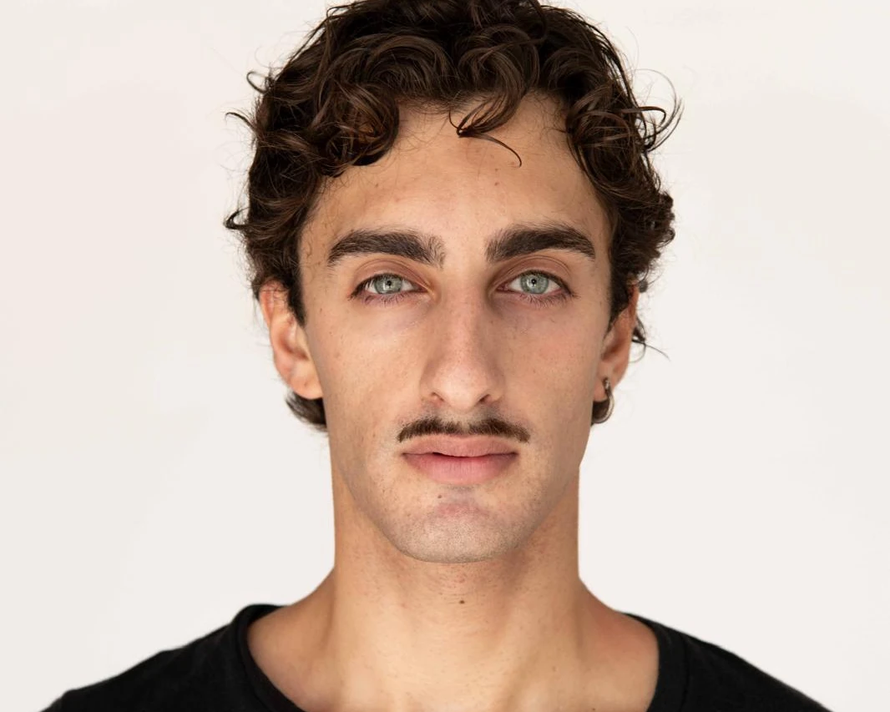

Hover for a preview — click a discipline to filter the index
Everything in one place. Every project carries its own colour palette — hover a row to step into it.

A versatile creative with a multidisciplinary background — from industrial design to visual arts.
I hold a degree in Product Design from NABA (Nuova Accademia di Belle Arti) in Milan. During my studies I gradually moved from industrial design towards visual arts, developing a strong interest in communication, creative direction and graphic design.
As a singer-songwriter under the name ZANI, I explore these interests through music, overseeing the creative direction and visual communication of the project.
I was part of the editorial team of NABA’s magazine for Milan Design Week 2023, and that same year worked as a teaching assistant alongside professor and design critic Massimo Martignoni, on his course on Modern Architecture History.
After graduating I spent a year as a graphic designer for FNM and Buccellati, before going freelance. Since then I’ve worked on graphic identities and visual communication for festivals, music and theatre events, and fashion editorials — and I’m in my second year as assistant director alongside Andrea Vailati, founder of ArteSettima.
Selected collaborations